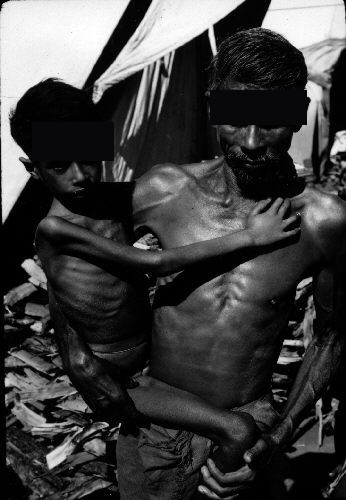

Se existem dezenas de micronutrientes essenciais à vida, por que dá pra acertar quase toda questão de prova decorando só um punhado de associações entre quadro clínico e vitamina?
Decore pouco, acerte muito: o padrão de prova é a chave
O padrão único de questão
Carência de micronutrientes é, em prova, um dos temas mais previsíveis que existem — e isso é uma boa notícia. A questão chega quase sempre de uma de duas formas. Na primeira, um caso clínico descreve um paciente e pergunta, no final, qual a provável deficiência vitamínica. Na segunda, um enunciado curto pergunta o contrário: quais as manifestações esperadas para a falta de determinada vitamina. Repare que os dois formatos cobram a mesma associação — apenas trocam o lado por onde se entra. Por isso o foco do estudo não é esgotar a função bioquímica detalhada de cada vitamina (isso quase nunca cai), e sim cravar a ligação quadro clínico ↔ deficiência. É uma associação por vitamina, e são poucas vitaminas que importam. Dominado esse núcleo, resolve-se a imensa maioria do que se cobra.
O que é micronutriente e por que falta
Antes das associações, dois conceitos que sustentam tudo. Micronutriente é uma vitamina ou um sal mineral que funciona como cofator de reações bioquímicas — peças sem as quais reações essenciais à vida simplesmente não acontecem. É por isso que a falta de um micronutriente vira doença: não é "fraqueza" genérica, é uma reação que travou. E por que um paciente chega a faltar? Há quatro caminhos, e vale conhecê-los porque o enunciado costuma plantar a causa no contexto: dieta deficiente (a via mais comum — a maioria dos micronutrientes vem da alimentação), estado catabólico intenso (paciente oncológico, grande queimado — o corpo consome mais do que repõe), má-absorção intestinal (a comida tem, mas o intestino não absorve) e erro inato do metabolismo. Na vida real, a carência costuma ser de mais de um micronutriente ao mesmo tempo, e aí fica difícil apontar o culpado isolado. A prova sabe disso — e por isso faz o oposto.
A divisão-mãe: lipossolúveis × hidrossolúveis
A primeira organização que você precisa ter na cabeça divide as vitaminas pela forma como são absorvidas. As lipossolúveis são absorvidas junto com a gordura — dependem de gordura para entrar. São quatro: A, D, E e K (o mnemônico ADEK resolve). As hidrossolúveis são absorvidas na luz intestinal junto com a água, e são as vitaminas do complexo B (várias) e a vitamina C. Essa divisão não é decoração: ela já antecipa pegadinhas (quem tem má-absorção de gordura falta lipossolúvel, não hidrossolúvel) e organiza o mapa que será construído achado por achado. Guarde a moldura: ADEK lipossolúveis · complexo B + C hidrossolúveis.
Clique em cada nó do mapa, ou Tab + Enter; cada nó revela órgão-alvo + achado-âncora.
Passe o mouse / Tab por cada seta: a causa que o enunciado plantou é a pista.

Quiz fixação
Enquadramento: o padrão único de questão e a divisão-mãe lipo × hidro.
-
Um enunciado descreve uma criança com má-absorção intestinal de gorduras e pergunta qual grupo de vitaminas está mais sob risco de deficiência. Qual a resposta?
Por que cada alternativa:
- A) Inverte exatamente o mecanismo — as hidrossolúveis entram com a água, e a má-absorção de gordura as poupa relativamente; cair nela é não ter ligado "lipo" a "gordura".
- B) Certa. A virada está na própria definição da divisão-mãe: as lipossolúveis (ADEK) são absorvidas junto com a gordura, então quem não absorve gordura é quem mais falta lipossolúvel.
- C) Armadilha de subconjunto: a vitamina C é hidrossolúvel, e ainda que faltasse, não seria a mais sob risco nesse contexto — quem associa "deficiência" a "vitamina C" no automático cai aqui.
- D) Nega o conceito-raiz: a má-absorção é uma das quatro causas clássicas de carência — quem marca isso confunde "comida presente" com "nutriente absorvido".
-
Por que as questões de carência de micronutrientes quase sempre trazem um caso clínico com clínica de uma única vitamina, se na vida real a deficiência costuma ser múltipla?
Por que cada alternativa:
- A) Falso clinicamente — a deficiência múltipla é a regra na vida real, justamente o que torna o caso de prova artificialmente limpo; quem marca aqui troca "raro na prova" por "inexistente".
- B) Inverte o motivo: o caso não é raro, é específico — são coisas diferentes.
- C) Certa. O enunciado "limpo" é escolha deliberada da banca: como na prática a carência é frequentemente de vários micronutrientes ao mesmo tempo (e aí seria impossível apontar um culpado), a questão isola uma clínica específica para que exista resposta única.
- D) Erra o alvo do estudo: o que cai é a associação clínica ↔ deficiência, não a função bioquímica detalhada — quem marca isto vai estudar o que menos rende.